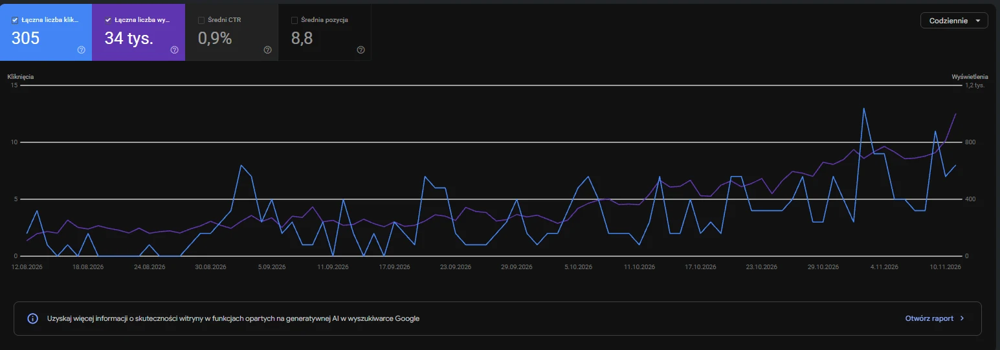

Eleven months after I lost my job in a warehouse
On 22 December 2025 I lost my job in a warehouse in the Netherlands. Eleven months later, I have a Windows app on the Microsoft Store, a game that strangers test for free, and a website Google now shows to a thousand people on a good day.
I still drive a taxi ten to twelve hours a day. Last week a shift that was supposed to end at 11pm ended at 5am. This is not a story about escaping that. It is about what you can build in the hours around it, and what happens when you stop measuring the work by money.

The short version
- Who: Marcin Firmuga (HCK), 23, a solo developer from Radom, Poland. Everything below is built under the name HCK Labs.
- PC Workman: a free, MIT-licensed Windows system monitor that explains what your PC is doing in plain language. On the Microsoft Store since July 2026. Version 1.8.8 is on its way there, after the most honest audit the app has had: 331 automated tests became 552.
- pcworkman.dev: 47 free guides about Windows and PC hardware, 44 of them also in Polish, and a library of 522 Windows processes explained in plain words.
- Scaling Laws: a tycoon game about running an AI lab from January 2022 to 2036, built in Unity. First line of code on 2 August 2026, first public build on 30 August, 13 public versions by 3 November, 641 commits. Version 0.8.0, out for Windows, Mac and Linux, is the last free version before Steam.
- Day job: taxi driver since July 2026.
Time travel: the dates
| When | What happened |
|---|---|
| Early 2025 | A shop called HuckHub. It never launched, and it taught me that marketing patter is not for me. |
| Spring 2025 | A warehouse in Venlo, the Netherlands. Order picking, fifteen kilometres a shift. |
| June 2025 | The first lines of PC Workman, on a 2014 laptop, at 11pm after a ten hour shift. |
| 27 October 2025 | PC Workman 1.0.0, the first changelog entry. |
| 22 December 2025 | Let go, with the apartment attached. That night: rebuild number four. |
| January 2026 | Back in Poland, unemployed, and the most productive month of the whole project. |
| 25 March 2026 | Three posts a week begin: Monday, Wednesday, Friday. |
| April 2026 | A convenience store, nine hour shifts. A post reaches 25,700 people. |
| Spring 2026 | Three weeks as an international driver, Czechia and Slovakia. I quit before France, when I saw how overloaded the vehicle was. |
| 25 May 2026 | A post reaches 46,904 people, still my largest number. |
| June 2026 | Welding plastics in a repair shop. pcworkman.dev goes live. An article reaches number one trending on HackerNoon. |
| July 2026 | PC Workman on the Microsoft Store. Back to the taxi, from 28 July. |
| 2 August 2026 | The first commit of Scaling Laws. |
| 30 August 2026 | Scaling Laws 0.1.0, the first public build. |
| 30 September 2026 | A stranger covers the whole Steam fee in one payment. |
| 3 November 2026 | Scaling Laws 0.8.0 for Windows, Mac and Linux, the last free version. |
| November 2026 | The PC Workman audit. Version 1.8.8. |
December 2025: the corridor
I spent nine months working in the Netherlands, most of it in a warehouse. Fifteen kilometres or more a day on foot, scanning barcodes, for about fifteen złoty an hour after deductions. I built the first versions of PC Workman on an old laptop between those shifts.
On 22 December, three days before Christmas, I was let go. The work agency had housed me for four months, and suddenly I was standing in a corridor working out where I would sleep.


Left: everything I owned, by a door, on 22 December 2025. Right: a shift in the warehouse.
I have written that night down properly in Fourteen months and in From a warehouse floor to the Microsoft Store, so I will not repeat it here. What matters for this chapter is what I decided afterwards: I would keep the same system, whatever the job was. Work by day, build by night.
Work by day, build by night
Back in Poland I spent January unemployed and building. Then came nine hour shifts in a convenience store, and three weeks as an international driver, through Czechia and Slovakia, posting photos from the road. I quit before France, when I worked out the vehicle was carrying many times its legal load. The owner then offered me 200 złoty for those three weeks. After that I welded plastics in a repair shop, and since 28 July 2026 I drive a taxi in Radom again, a job I had already done for two years before any of this. Ten to twelve hours a day.

The system has not changed in a year. Days belong to whoever pays for them. The evenings, the nights after a long shift and most Sundays belong to two projects. Some nights that means an hour. Some nights it means writing code until it gets light, then sleeping four hours and going out to drive.
I do not recommend it as a lifestyle. I can only say it works, because the numbers below were all made in those hours.
PC Workman: a year to the Store, a week to tell the truth
PC Workman reached the Microsoft Store in July 2026, after about a year of evenings. It is a system monitor, but the idea was always that it should not just show you numbers. It should tell you what they mean: which process is eating your RAM and whether that is normal, whether your CPU is hotter than it usually is, which startup apps you can safely switch off.
This autumn I took it back out of the drawer and did a full audit on Windows 11. Before touching any code, I read the logs the app had been writing on real machines since July. They had the answers to questions I was about to spend a week asking.
Some of what I found was hard to read:
- I spent six hours asking hck_GPT, the assistant inside the app, what a normal user would ask. 28 of 71 questions ended in "I did not understand". Short everyday questions with no hardware word in them were rejected outright. After the fixes, a sweep of 122 everyday questions got zero of those.
- On Windows 11 the diagnostic console could never hide, because Windows Terminal ignores the hide call. The app's own log recorded that 43 times.
- The fan page showed numbers that were not measured, and the CPU fan read 560 RPM on every machine. Dashboard temperatures were a formula on the load.
All of that is fixed in 1.8.8. The rule now is simple: a number is measured, marked as an estimate, or not shown. The release went from 331 automated tests to 552, and it brings something new as well: click the CPU, RAM or GPU card and you get its full history, from the last hour to everything ever recorded, with the heaviest processes and every spike in that period.

The guides nobody asked me to write
Most of pcworkman.dev is not about the app. It is 47 free guides about Windows and PC hardware: what a process is, why RAM usage is high, what a normal CPU temperature looks like, which startup apps you can disable. Each one is written to fully answer the question for someone who will never install my app. 44 of them are also in Polish.
In early August, Google showed the site about 120 times a day. On 11 November it showed it 1,001 times. Over the last three months it was shown 34,000 times and clicked 305 times.

I will be honest about the weak part: fewer than one in a hundred people who see it click. In October I rewrote the titles of 13 guides that were seen a lot and clicked almost never. They went live on 7 November. I wrote down a prediction and a date, 5 December, and I will publish the result whichever way it goes.
Scaling Laws: 641 commits in 106 days
In August I started a game I had wanted to play for years and could not find. You start on 1 January 2022 with twelve million dollars and no models, in a world where the real ones arrive on the dates they actually arrived. You train models, sell tokens, buy or rent compute, and try to still be here in 2036. The hardware is 22 real generations of accelerators, host CPUs, memory and networking, with their real launch dates and prices.
And it can bankrupt you. That is on purpose. A game about running a company that cannot fail is not a game about running a company.

The first line of code went in on 2 August 2026. The first public build went out on 30 August. By 3 November there had been 13 public versions, more than one a week, each with a changelog written for players rather than for me. The game speaks English and Polish, runs on Windows, Mac and Linux, and has 1,958 automated tests behind it.
None of that is the interesting part. The interesting part is the people.
By mid-October the free builds had about 700 downloads, and a small group of testers started writing to me as if the game were theirs. One of them, Francisco, played 1,391 in-game days in a single sitting and found that the game had twelve research nodes no player could ever reach. Another found that the intro film ignored both volume sliders. The public changelog has a section for every version that says who found what.
On 30 September one person I had never spoken to covered the whole Steam fee in a single payment of one hundred dollars. I read the email at 6:30 in the morning before a twelve hour shift. I wrote about it in I did not believe in my own fundraiser. It changed how I think about all of this more than any number has.
Last week I wrote a bot that plays fourteen years of the game and presses nearly every one of its buttons. It found four bugs that more than 1,800 tests had missed, among them a tax office that never collected from anyone who ignored its letters. The first time the bot paid its taxes, it went bankrupt in year twelve.
Version 0.8.0 is the last free one. The next version of Scaling Laws is the Steam version.
What comes next: PC Workman Central
The idea I keep coming back to is this: one PC Workman on one computer, watching a whole room of them. A school lab with 40 machines, a small office, a gaming café. On one screen, every computer with its health at a glance, and a click to open the full picture for any of them: processes, temperatures, history, and the same plain-language notes the app already writes.
People who look after rooms of computers have already asked me whether one copy could watch all of them. That is the best signal an idea can get before it exists.
I know how I would start, and also how I would not. The first version would work on the local network only, with no cloud and no accounts, so a school never has to trust anyone with its data. It would only watch, never act: no closing programs or restarting machines remotely until the watching part has earned that trust. And it only makes sense on top of an app that is stable on every machine, which is exactly why the audit came first.
Things are starting to line up
I do not want to make this sound bigger than it is. I still drive the taxi. The game is not on Steam yet. The app is free, so it does not pay my bills.
But a year ago there were no signals at all. I wrote posts that thirty people read, and I had to decide on my own that any of it made sense. Then the signals started arriving, one at a time: a post that reached 46,904 people, an article that went to number one on HackerNoon, users who told me what PC Workman got wrong, testers who stayed for weeks, a stranger who paid for a Steam page, a site that Google shows a thousand times a day. Soon we are moving out, with our dog, and starting a new chapter of life as well.

My first reward was never money. It was people the work actually helped, and people who stayed. I lowered the bar on purpose: I would keep building whether or not anything came back. Things are coming back now, and every one of them came from the work being public.
If you have been building something at night, around a job that pays the rent, keep a record of it. Mine is in the changelogs, the commit history and posts like this one. One day someone you have never met will read it, and it will open a door you did not know was there.
FAQ
What is PC Workman?
A free Windows system monitor by HCK Labs that explains your PC in plain language: processes, temperatures, startup apps, services and history. It is open source under the MIT licence and available on the Microsoft Store.
Is PC Workman free?
Yes. It is free on the Microsoft Store and on GitHub, with no account and no paid tier.
What is Scaling Laws?
A tycoon game about running an AI lab from January 2022 to 2036, built in Unity by HCK Labs. It uses real hardware generations and launch dates, and it can bankrupt you. Version 0.8.0 is the last free version; the next one is the Steam version.
Where can I play Scaling Laws?
Version 0.8.0 is on itch.io and Game Jolt for Windows, Mac and Linux. More about it on the Scaling Laws page.
Who is behind HCK Labs?
Marcin Firmuga, a solo developer from Radom, Poland, who builds PC Workman and Scaling Laws in the evenings while working as a taxi driver.